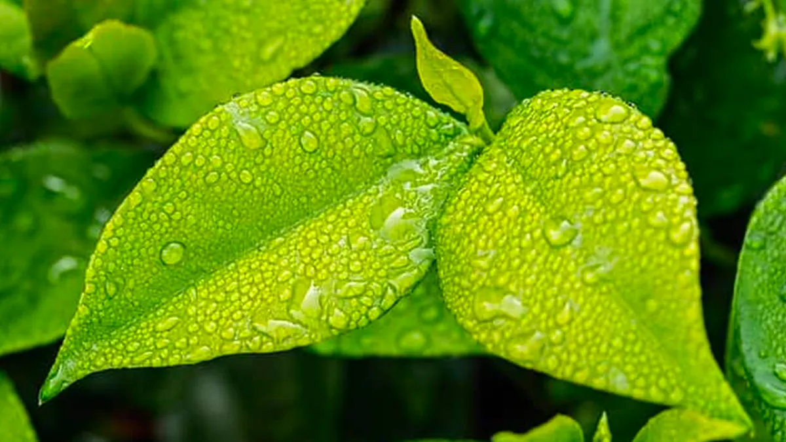
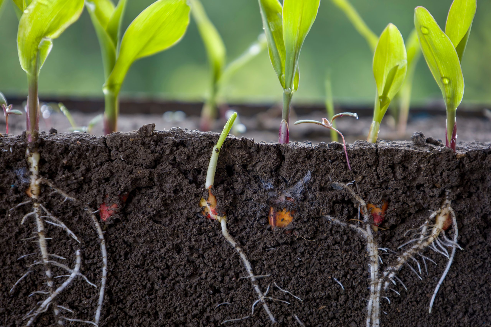
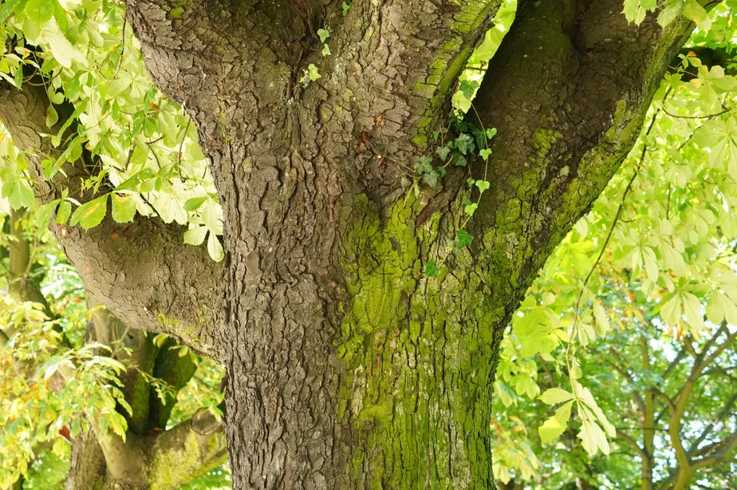
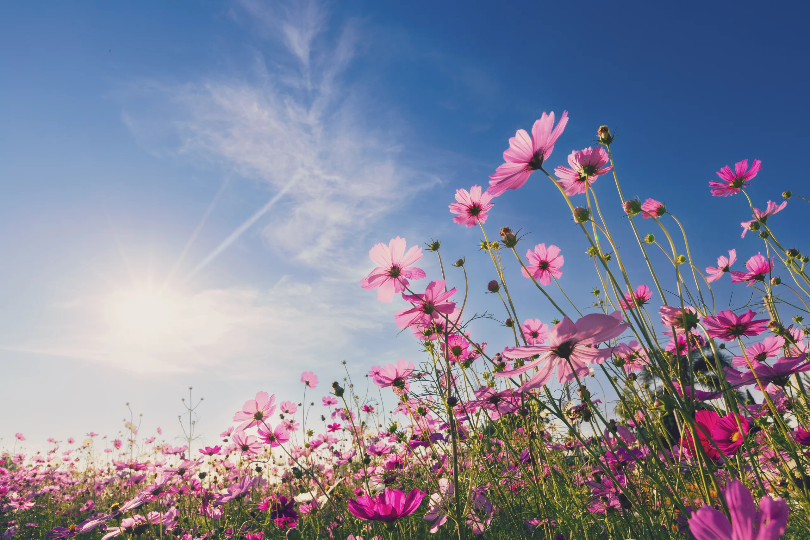
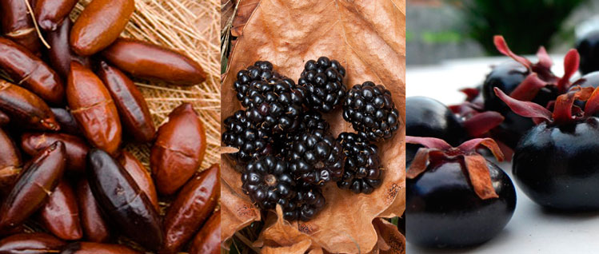

Raiz, Caule, Folha e Flor, Qual a função?
Conheça partes das plantas e como elas fucionam

Cada parte da planta tem uma função vital para sua alimentação, respiração, crescimento e reprodução. No entanto, nem todas as plantas têm todas essas partes; por exemplo, o musgo e a samambaia não têm flores ou frutas e se reproduzem por esporos e as folhas dos cactos evoluem para se tornarem espinhos.
As Folhas
As folhas sustentam a fotossíntese, que produz o alimento da planta. Elas contêm cloroplastos e clorofila, o pigmento verde que absorve a luz solar. As folhas também realizam a respiração e a transpiração. Folhas têm estômatos que permitem a troca de gases e água. Outros exemplos são a forma simples e composta das folhas.
As Raízes
As raízes prendem a planta no solo e absorvem água e sais minerais; elas também atuam como reserva de substâncias. A raiz principal é a principal, mas as raízes laterais são subtrações. Outros exemplos incluem mandioca, cenoura, vitória-régia, dentre outros.
O Caule
O caule mantém a planta viva e transporta nutrientes, carregando água e sais minerais das raízes para as folhas e retornando açúcar. Eles também secretam hormônios vegetais que estimulam o crescimento. Outros exemplos incluem caules e raízes tuberosas e aquáticas. As flores são as partes reprodutivas das angiospermas. Elas podem ser hermafroditas ou dioicas. Frutas se desenvolvem do ovário, abrigam sementes que brotam sob as condições adequadas.
As Flores
As flores são responsáveis pela reprodução da planta. Elas estão presentes apenas no grupo de plantas mais evoluído chamado de angiospermas. As flores podem ser hermafroditas ou monóicas quando possuem ao mesmo tempo as estruturas femininas (carpelos) e masculinas (estames). Um exemplo desse tipo de flor são as tulipas, que também podem ter suas estruturas separadas em flores diferentes, chamadas de dióicas, como ocorre com o mamoeiro.
Os Frutos
Os frutos são, geralmente, resultado do desenvolvimento do ovário após a fecundação. No interior dos frutos são encontradas as sementes, que são os óvulos desenvolvidos. As sementes, se encontrarem condições apropriadas, germinam no solo originando novas plantas.